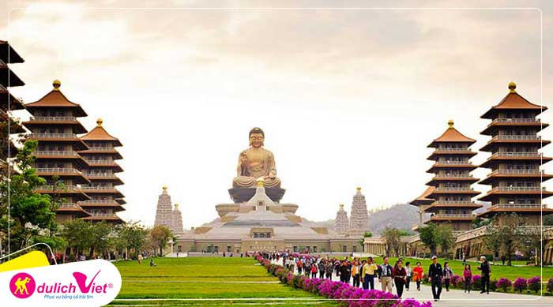

Điểm nhấn hành trình
Hành trình Đài Bắc - Nam Đầu - Đài Trung - Cao Hùng
Lịch trình 5 ngày 4 đêm
Khởi hành 26/03; 02,09,16/04
Vận chuyển Hãng hàng không Vietjet Air
Du lịch Đài Loan - Đài Loan là một điểm đến lý tưởng trong các tour du lịch Châu Á. Du lịch Đài Loan bạn sẽ được ghé thăm những thắng cảnh nổi tiếng, những trung tâm thương mại sầm uất bậc nhất, hay trải nghiệm nền ẩm thực đa dạng và phong phú đã lôi cuốn bao du khách. Nào hãy cùng Du Lịch Việt đi và tìm hiểu những điểm đến thú vị mà bạn không nên bỏ qua trong tour du lịch Đài Loan đầy hấp dẫn nhé..